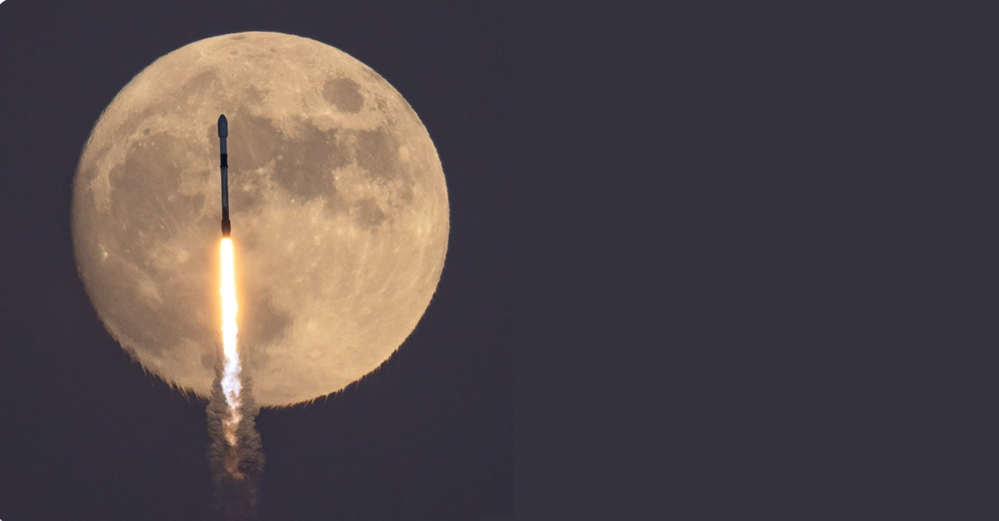

Internship with the Air Force Research Laboratory
2022 - 2024
The research goal of this project is to reveal the fundamental mechanisms of curing-induced microcracking in ceramic matrix composites.
Once the curing-induced damage mechanisms are known, process-property relationships can be established in thermosets across the micro and macro scales, which will enable new manufacturing capabilities.
Knowledge generated from this research will allow manufacturers to tailor their processes to prevent curing-induced damage.

Get In
Touch
Photo Credit: Nicholas D’Alessandro